Case studies.
How Furnisys systems work in real facilities, from manufacturing lines and R&D labs to defence workshops and training centres.
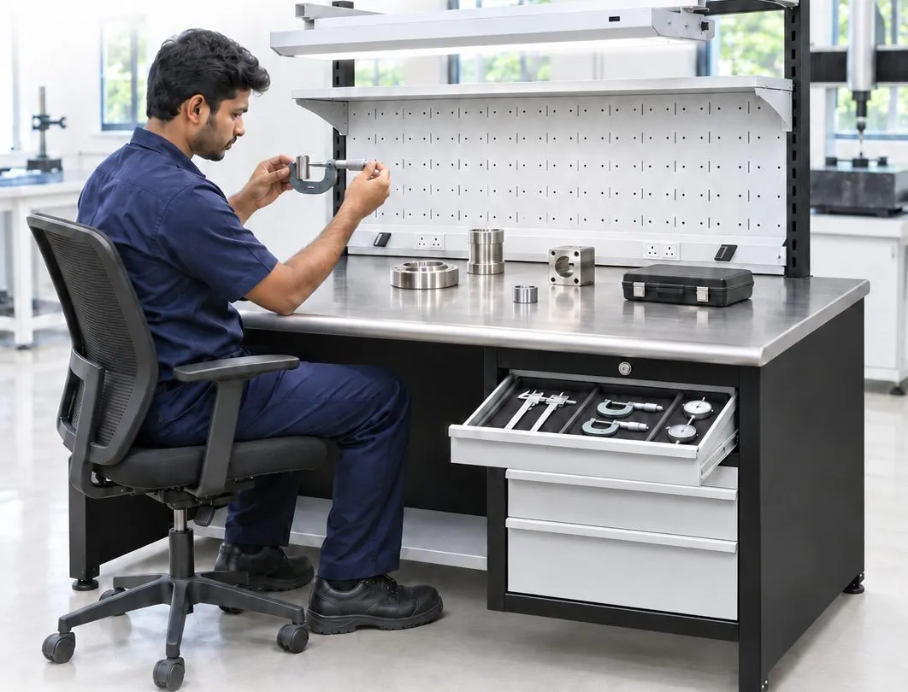
Eleven process zones, one workstation system
Equipping a new jewellery manufacturing facility, from hammering and diamond cutting to plating and hallmarking, with Pro and Scitec workstations, base cabinets and mobile cabinets.

An ESD-safe testing lab for medical equipment
Seven Scitec workstations with instrument riser shelves and four wall-side Scitec workbenches, laid out in 2D and 3D to fit the available space.

Eight packaging workstations for a bearing manufacturer
A repeat client expanding its warehouse. Scitec workbenches with Link Uprighters and pack accessories, configured around their actual packaging process.

Packaging Workstation for Tool & Die Manufacturer
A manufacturer of tungsten carbide and steel dies used in metal forming approached Furnisys with a specific requirement: a dedicated workstation for packaging finished…

Workstation Systems for an Aerospace Manufacturer
Industry: Aerospace & Defense, Product & Parts Manufacturing Function: Research & Development Furnisys Program: Workstation Systems, Link Uprighter System, Storage &…
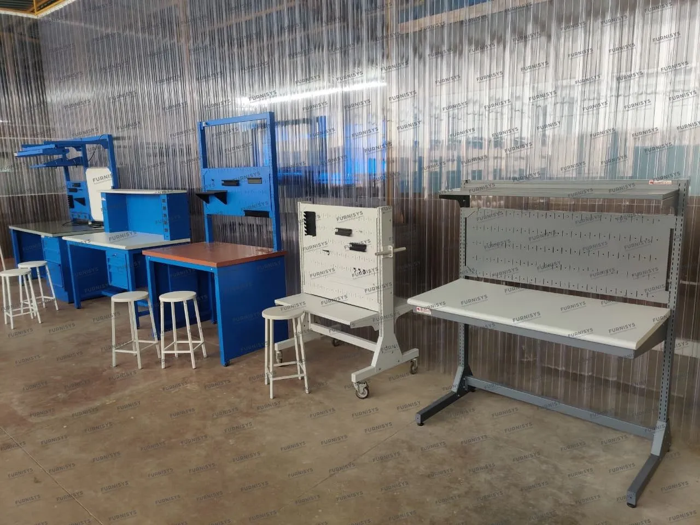
Kritsnam Case Study
Founded in 2015 in Kanpur, Kritsnam Technologies makes Artificial intelligence-backed solutions to manage water resources sustainably. With their product Dhaara, a…
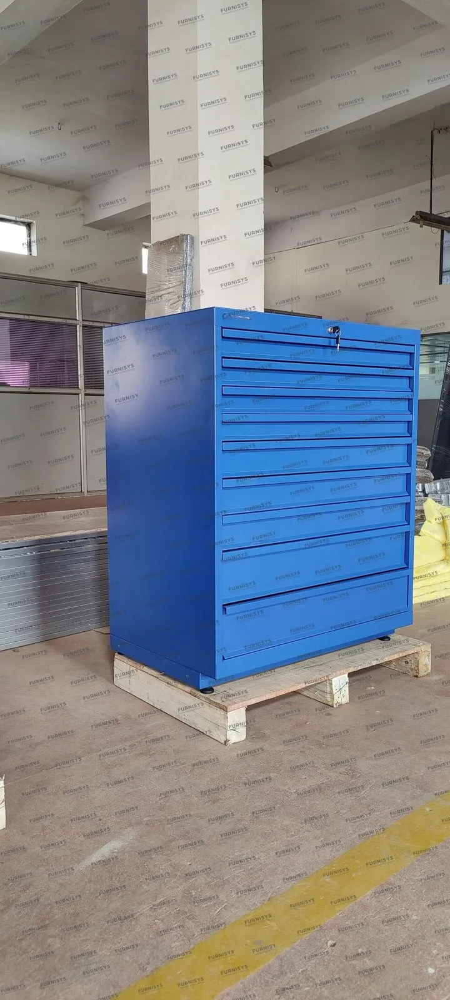
Liebherr Case Study
Liebherr Appliances India Private Limited is a heavy equipment manufacturer, a wholly owned subsidiary of Liebherr-Hausgeräte GmbH in Ochsenhausen (Germany).

Zero Carbon Tech 24 Case Study (Industrial & Railway Infrastructure Services)
They provide Carbon Capture, Utilization, and Storage (CCUS) Solutions

Weatherford Case Study
In the oil industry, particularly in oil equipment and services, research and development (R&D) play a critical role in ensuring that products and processes are reliable…
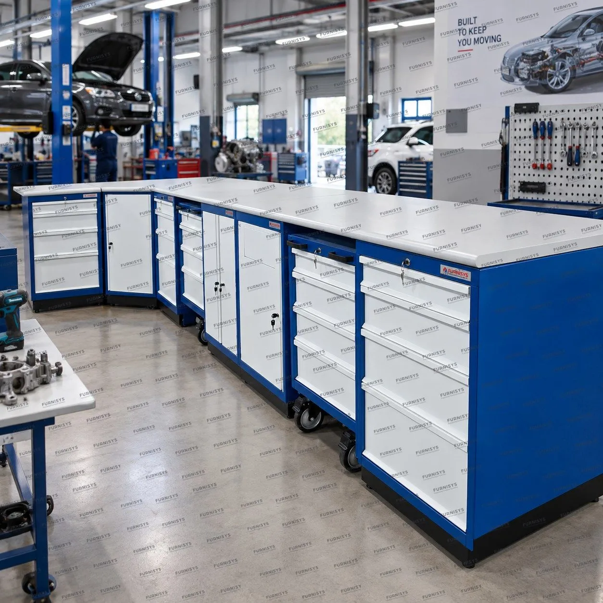
A Training Workstation Configured for Flame Arrester & Breather Valve Assembly
The client manufactures flame arresters, valves, and tank equipment, including equipment for cryogenic storage tanks, hydrogen applications, and lightning protection.…

Premier India Agencies Case Study
Product & Services- They are manufacturer & supplier of industrial and railway-related products.

A Heavy-Duty Maintenance Workbench, Shipped Overseas for a Soap Plant
A Pro Workbench with a GI-cladded top and rubber mat, configured for pump, valve and gearbox repair in a soap factory's maintenance zone and packed in knock-down form…

Replacing Wooden Benches on a Gas Detector Assembly Line
An ESD-safe Scitec Workstation, a laptop trolley for firmware and calibration, and a material handling trolley, configured around each step of gas detector assembly and…
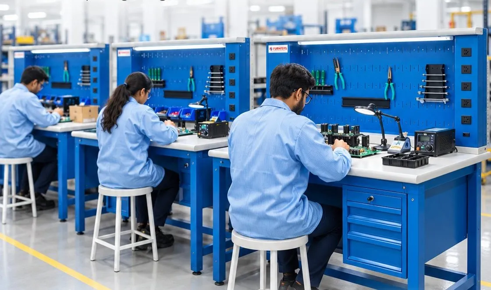
A Two-Technician Assembly Workstation for a Factory Moving to Automation
A dual-user Scitec Workstation with a Link Uprighter, a Base Workbench for preparation work and a mobile cabinet, configured for a cosmetics packaging plant's tool room.
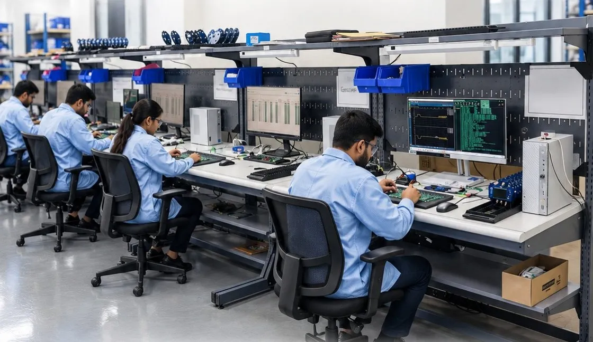
ESD-Safe Assembly and Packaging Stations for PPE Lighting
Two Link Workstand configurations, one ESD-safe for soldering LED PCBs into protective housings and one for packing finished lights, replicating a layout the client…
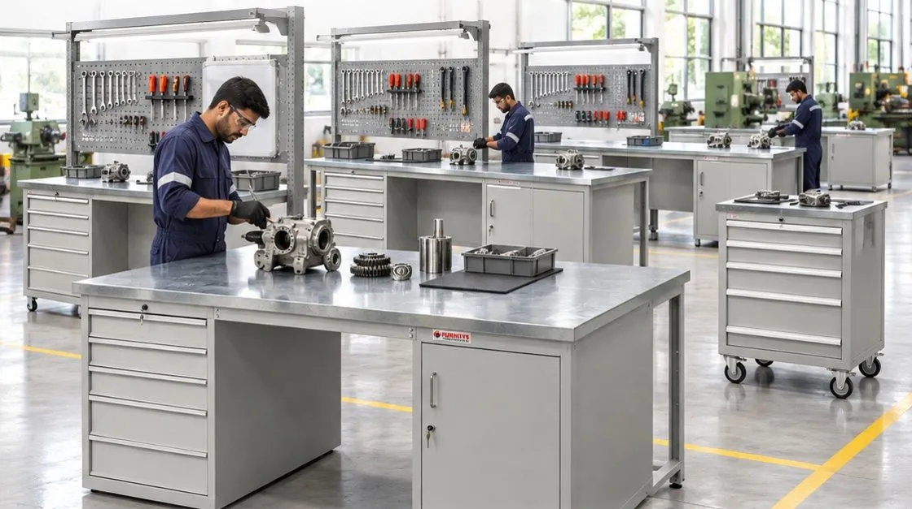
A Mobile Tool Trolley for an Army Engine Maintenance Workshop
A Link Mobile Trolley with pegboards, tool holders and an adjustable shelf, configured to move between twelve zones of a newly built engine workshop.
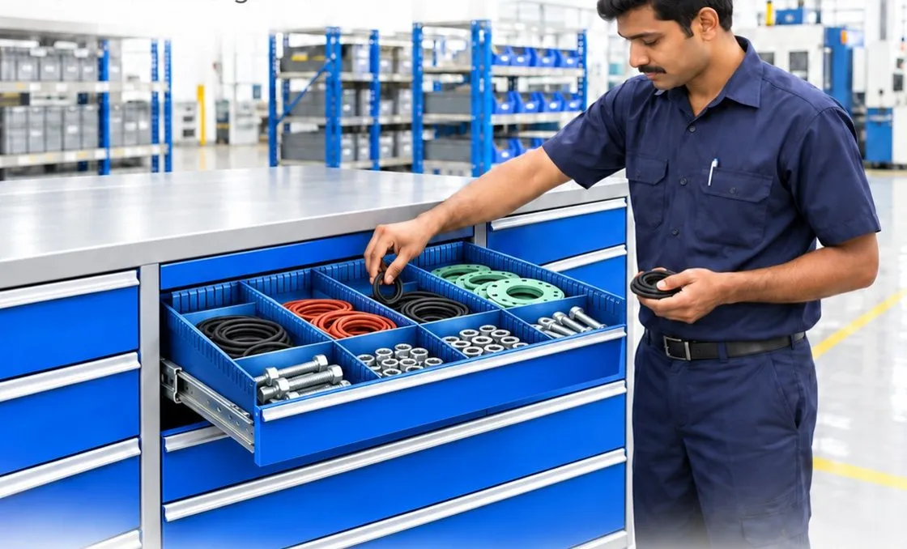
A Partitioned Nine-Drawer Cabinet for Automotive Sensor Components
A nine-drawer base cabinet with adjustable partitions and a fork-truck base, configured for an automotive mechatronics maker's sensors, PCBs, connectors and switches.
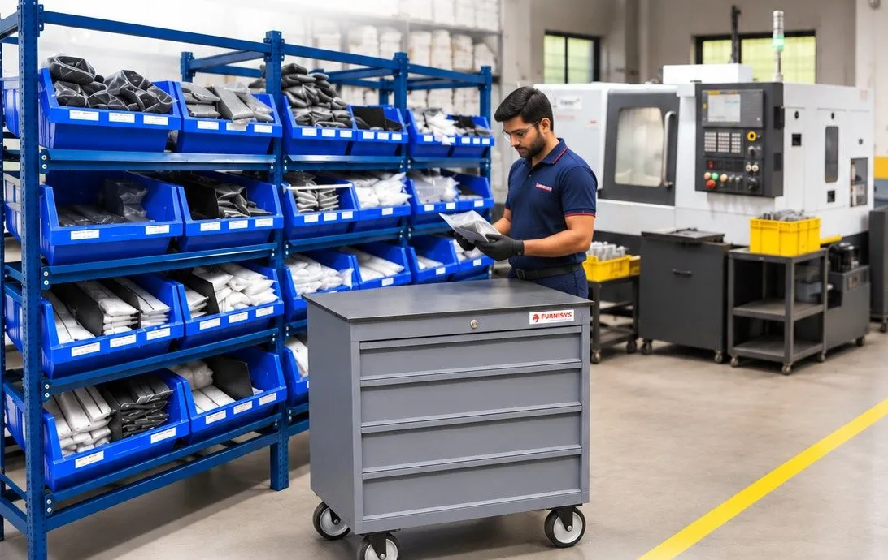
Flow Racks and a Kitting Workstation for an Apparel Maker's Lean Layout
Link Flow Racks in a starter-and-adder layout plus a Link Workstation for kitting, replacing a raw material store where staff spent too long searching for fabric,…
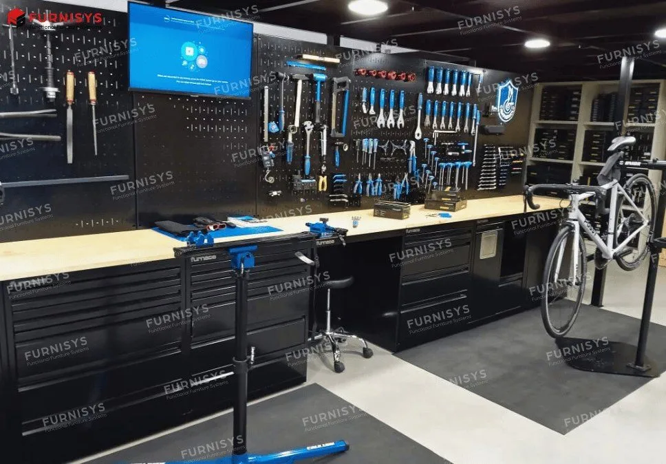
Assembly and Service Workstations for a Premium Bicycle Store
Pro Workstations with base cabinets and Link Uprighters for a store where bikes are assembled live in front of customers, plus a matching station for repairs.

Seven Workstations for an Automotive Tyre R&D Lab
Scitec workbenches with hanging drawers and Link Uprighters, plus base-cabinet benches with GI tops and vices, configured for tyre sample inspection, material testing,…

A Twelve-User ESD Lab for EV Charger R&D
Back-to-back Flexi Workstations in a starter and adder layout with ESD mats, hanging drawers, angle shelves and power rails, set up after a plant renovation for EV…
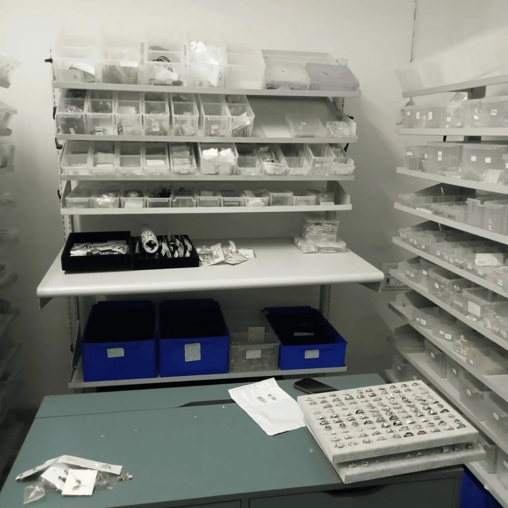
Jewellery Assembly and Packing Stations That Doubled With the Team
Flexi Workstations with whiteboards and accessory shelves, plus Flexi Universal Carts for the storeroom, later reconfigured from five to ten users by adding parts rather…
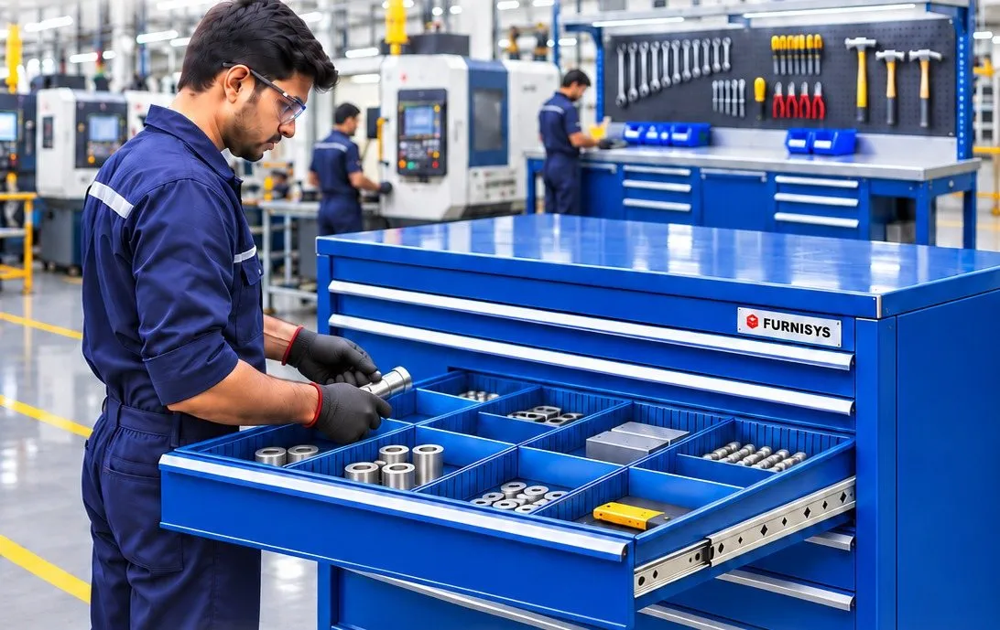
Partitioned Tool Cabinets for Jute Machinery Maintenance
Mild steel base cabinets with compartmentalised drawers for spanners, measuring instruments, electrical testers and consumables used to service jute processing machinery.
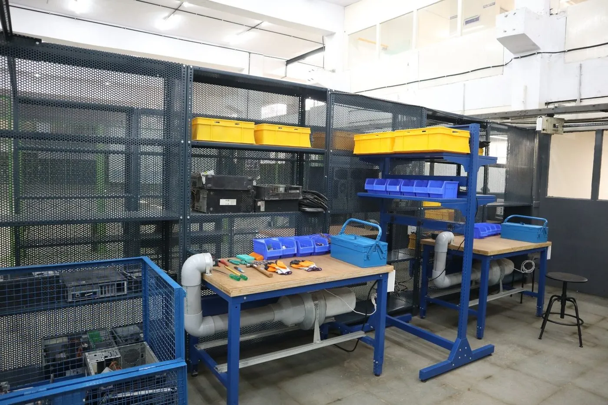
Thirty-Two Dismantling Stations for an E-Waste Co-Working Space
Base Workbenches and Link Workstands with shelves and power rails, configured for micro-entrepreneurs dismantling and segregating electronic waste.
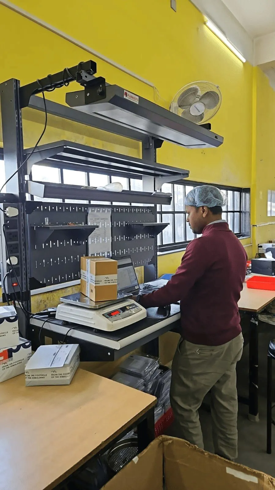
A Packing and Billing Workstation for a Premium Tea Retailer
A Scitec workbench with Link Uprighter and pack accessories, then a Flexi Workstation chosen after a factory visit, set up for weighing, labelling, billing and packing…
An L-Shaped Assembly and Testing Lab for Telecom Equipment
Four Scitec workstations with Link Uprighters in an L-shaped layout, plus a base-cabinet operations table, reworked from an earlier Flexi proposal to meet budget without…
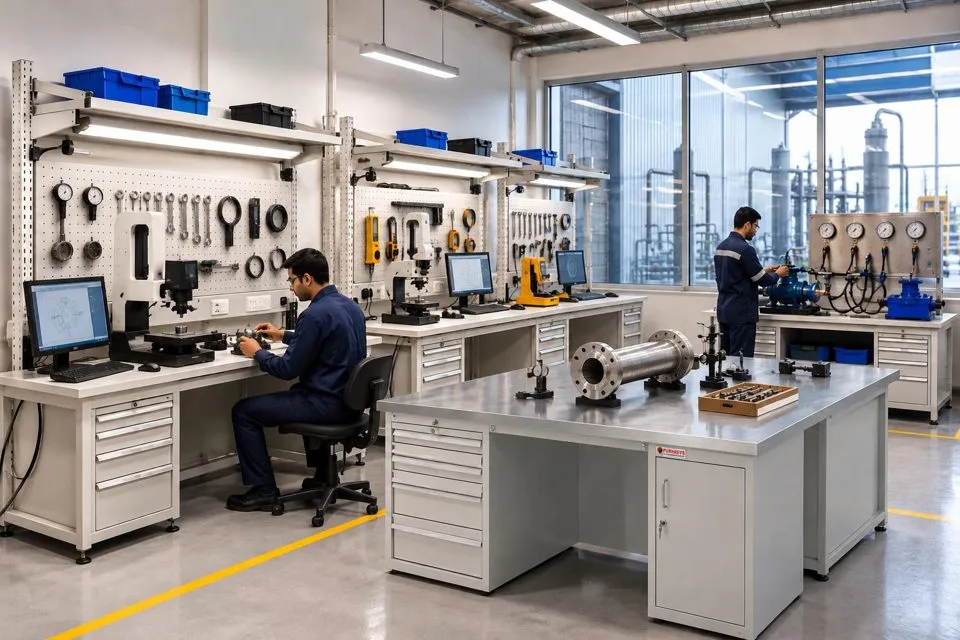
Assembly, Tool and Packaging Stations for an Industrial Valve Line
Scitec workbenches with Link Uprighters for valve assembly, Link trolleys as mobile shadow boards, and Base Workbench packaging stations including a final station with…
A Pump Gearbox Maintenance Station for a Food and Beverage Plant
Two base cabinets under a postform worktop with a scratch-resistant rubber mat, and a Link Uprighter with pegboard, bin rail, power rail and LED task light for gearbox…

Workbenches for a Rocket Engine Prototyping Lab
A Scitec Workbench and a Scitec Workstation with GI-cladded, rubber-matted tops, M12 levellers and reinforced rails, configured for drilling, grinding and assembly of…

Assembly, Grinding, Lathe-Side and Packing Tables for a Valve Factory Expansion
Scitec workstations and workbenches with GI-cladded tops and M12 levellers for an uneven trimix floor, plus lathe-side tables, a packaging station and a mobile cabinet,…
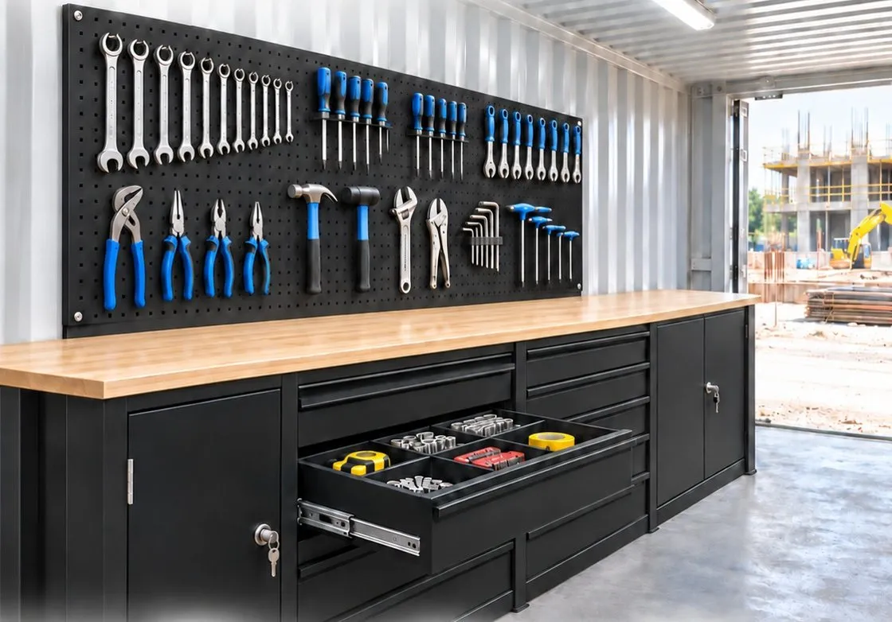
Wall Pegboards for Tool Control in a Shutter and Gate Factory
Wall System pegboards in four sizes with hooks, holders and trays, organising hand tools across fabrication, assembly and installation zones.
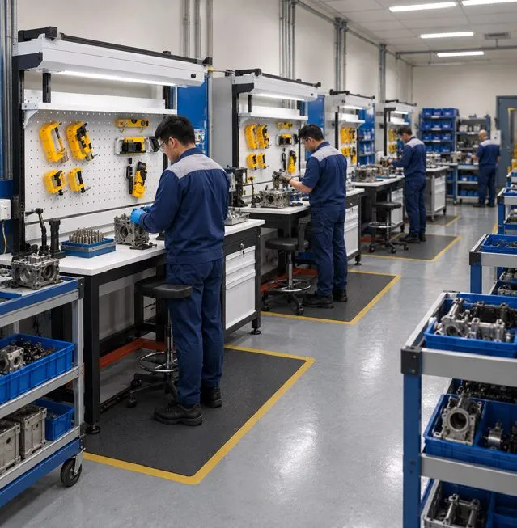
Packing, Display and Kitting for an Electrical Components Maker
A Link Workstand packing station in starter and adder form, a Link Trolley with bin rails for kitting and replenishment, and a pegboard display face for packed products.
Assembly Workstations for Fire Suppression Valves, on a Five-Week Timeline
Workbenches with rubber-matted postform tops and Link Uprighters carrying tube lights, tool rails with spring balancers, pegboards and power rails, configured after a…
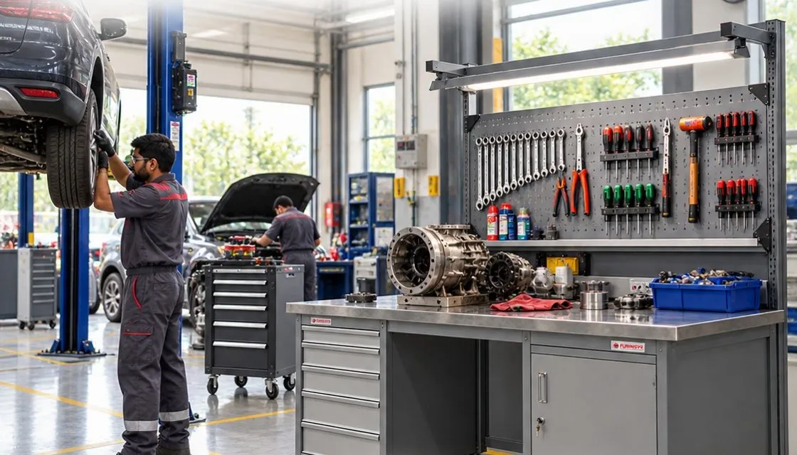
Stainless-Steel Workbenches for a Motorcycle Tuning Workshop
A Pro Workbench with a shutter cabinet and a Pro Workstation with a four-drawer base cabinet and pegboard, both with stainless-steel tops and rear back-stops for fork…
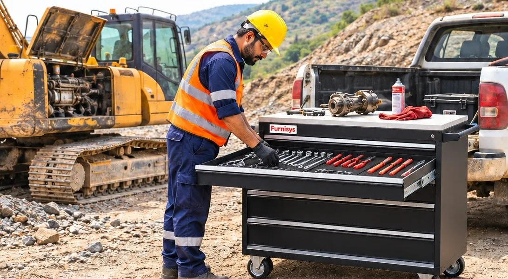
A Relocatable Heavy-Duty Workstation for On-Site Chemical Cleaning Crews
A Pro Workstation with a GI-cladded top, hanging drawers and a Link Uprighter, built to be dismantled and redeployed at customer sites for descaling and maintenance work.
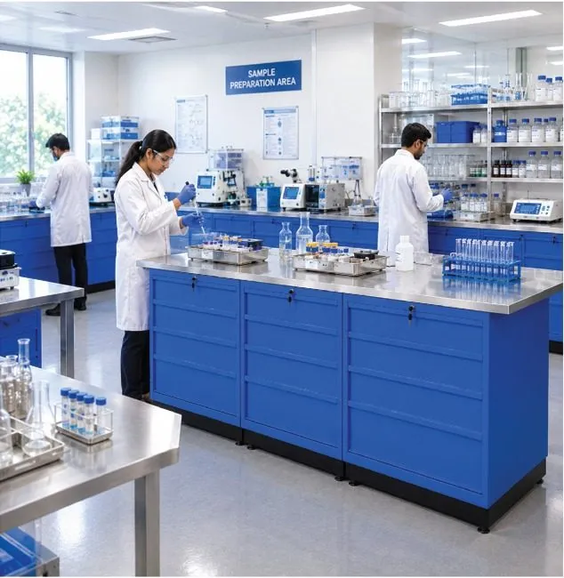
An ESD-Safe Flexi Workstation for Blood Transfusion Device R&D
A Flexi Workstation with an ESD mat, pegboard, monitor arm, switched power rail, task light and air hose attachment, configured so a medical device R&D team can expand…
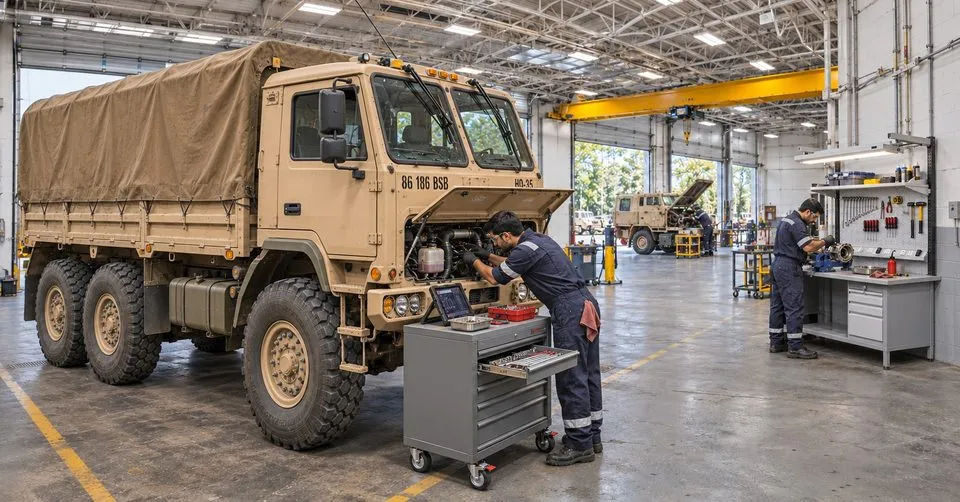
A Heavy-Duty ESD Workstation for Naval Systems R&D
A Base Workstation rated for 360–454 kg with ESD mat, wrist strap and grounding block, and a Link Uprighter with pegboard, power rail and shelf, configured for naval…
A 1,000 kg Maintenance Workstation for Naval Engineering
A Pro Series workstation rated for 750–1000 kg with a 2 mm GI-cladded plywood top, hanging drawers and a Link Uprighter, configured for rough maintenance work in a…
A Double-Sided Repair Workstation for Embedded Electronics
A Flexi Workstation with a postform worktop and matching pegboards and shelves on both faces, configured for soldering, debugging and testing development boards and modules.
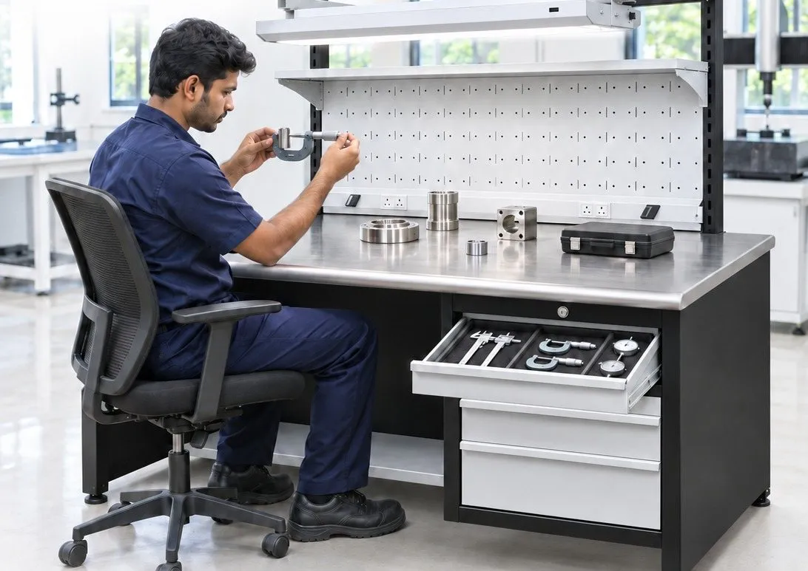
A Clean, Organised Inspection Workstation for a Workholding Manufacturer
A Scitec Workstation with an SS-cladded worktop, levellers, footrest and a Link Uprighter with pegboard, tackboard, shelf, task light and power rail, replacing a…
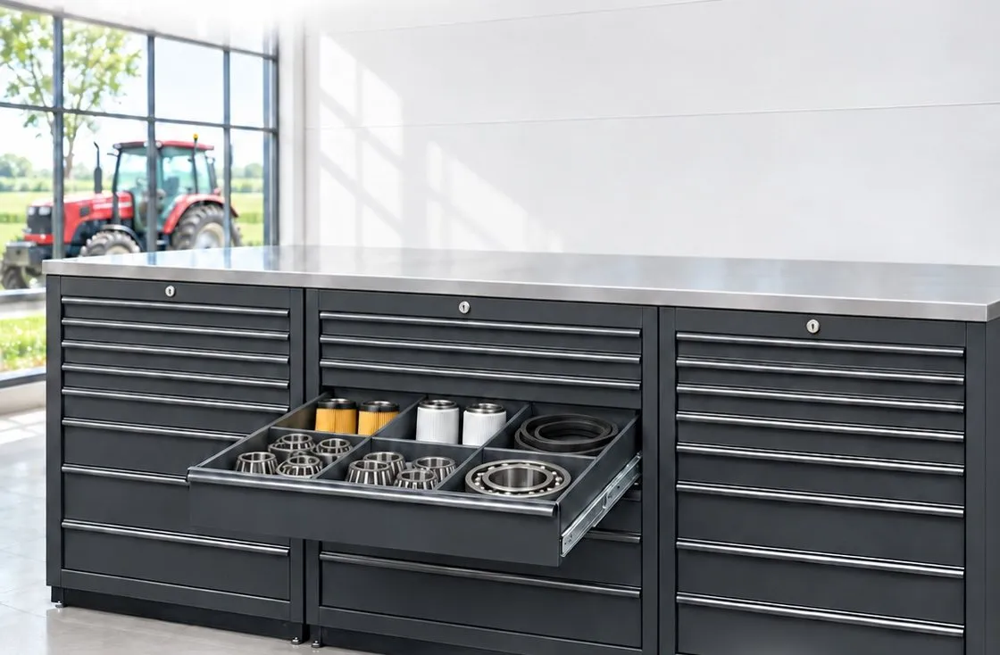
Lockable Nine-Drawer Cabinets for an Industrial Pump Manufacturer
Three 57-inch base cabinets with nine drawers of mixed heights, heavy-duty telescopic slides rated 60 kg per drawer, integrated handles and central locking, replacing…
Looking for something specific?
Tell us your industry and application and we'll share the most relevant case studies and brochures.